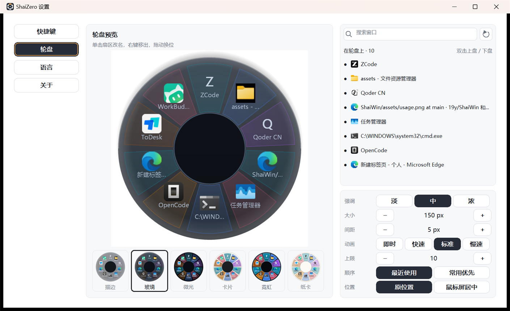

用方向选，而不是用眼睛找
扇区角度、间距、圆环层次都经过收敛。目标永远在指针周围，手腕走的路比列表短得多。
按住 Alt，在桌面任意位置按下鼠标左键——
十扇窗在指针下展开。滑向哪一格，松手，
那个窗口就到前台。
没有窗口列表，没有 Alt+Tab 的连环按。一次就会，之后不用看屏幕。
轮盘就在你按下鼠标的位置展开，不多占一块屏。默认组合是 Alt + 左键，也能换成别的键或鼠标侧键。
指针落在哪一格，哪一格亮起，中心实时显示窗口标题。拖回圆心松手、或点右键，取消，不打扰任何窗口。
松开左键即刻切换。顺手 Ctrl+2 把当前窗口钉上轮盘；Ctrl+T 打开设置。
窗口按指纹记座，下次登录还在老位置。手指不用找，座位有记性。
同一副几何，六种材质。点一下，右侧轮盘立即换装——你桌面上的那一枚也会跟着变。
磨砂玻璃叠在桌面上，默认形态，安静耐看。
快捷键 / 轮盘 / 语言 / 关于。四页讲完，没有下一步，也没有保存。

没有账号、没有遥测、没有后台服务。一个 exe，用完就可以忘掉。
扇区角度、间距、圆环层次都经过收敛。目标永远在指针周围，手腕走的路比列表短得多。
窗口按指纹记座。下次开机，浏览器还在右上，终端还在左下。
静态 CRT 编译，不依赖 .NET / VC++ 运行库。压缩包里只有 exe、许可证、说明。
从工程草图到黑场灯管，总有一套配你的桌面。
逐屏 DPI 感知，缩放不糊、不偏；轮盘永远跟着指针走。
core 不知道 Windows 存在，platform-win 不知道 UI 存在，app 只做编排。纯 Rust，140 项单元测试。
到 GitHub Releases 下载 shaizero-<版本>-win64.zip，解压到任意目录，双击 ShaiZero.exe 就能用。运行要求：Windows 10 1809+ 或 Windows 11，x64。
certutil -hashfile <zip> SHA256
ShaiZero 免费使用：可修改、可闭源分发、可企业内部部署，但不得有偿销售。要是它确实顺手了一点，可以请作者喝杯咖啡。心意收到。